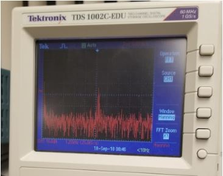

Lab 2
Building the Microphone Circuit
We began by connecting the microphone without any amplification. We checked the signal on the oscilloscope, but were unable to see any response from playing or singing a 660 Hz tone. We were able to see some spikes only when we tapped the microphone. This indicated to us that we needed to amplify our signal.Amplifier Circuit
Next, we added an amplifier to our circuit. We used the circuit found on Team Alpha’s (2017) website. We changed the feedback resistor to change the amplification, starting with a small resistor and building up to a 3MΩ resistor. The larger resistors led to clipping on the oscilloscope. We settled on a 680 KΩ resistor, because this gave us significant gain while also not clipping. The yellow waveform below shows our results.
To test for clipping and to generate the wave, we either used an app on one of our phone, as shown below. One of our member would sing the note into the microphone, which was equally effective.

Using FFT to Detect 660 Hz Signal
To detect a 660 Hz signal, we knew that we needed to take the FFT of our signal and determine if there was significant peak in the 660 Hz bin. We know that frequencies above the Nyquist sampling rate will fold back into the spectrum, so we designed a low-pass filter that would suppresses high-frequency components of signals.Plotting and Scaling FFT Results
After looking at the arduino spec sheet and team alpha’s website, we decided that the maximum frequency on our spectrogram is calculated as follows:- Maximum ADC rate: 125 KHz / 13 cycles for 10 bit resolution = 9600 Hz
- We adjusted our code to set the prescaling factor to 128 instead of 64 (we didn’t realize that the adc sampling rate was reset inside the for loop. When we originally changed the code, we didn’t see that part of the code and saw no change in the output.).
- We checked our serial monitor output against the FFT the oscilloscope computes, as shown below.
Using Delays to Change the Bin Width
We noticed that even after changing the prefactor, the bin width was still very wide. In order to decrease the bin width, we tried slowing down the sampling rate. This will make the maximum frequency of the FFT smaller while still keeping 256 points, which will make the bin width smaller.We wanted to make the bin widths even smaller. To do this, we tried adding no-op statements in our for-loops to make the sampling rate even lower. Our initial data showed promising results, because adding the no-ops shifted the 660 Hz peak significantly.
while(1) { // reduces jitter
cli(); // UDRE interrupt slows this way down on arduino1.0
for (int i = 0 ; i < 512 ; i += 2) { // save 256 samples
while(!(ADCSRA & 0x10)); // wait for adc to be ready
ADCSRA = rStart | freq; // restart adc
byte m = ADCL; // fetch adc data
byte j = ADCH;
int k = (j << 8) | m; // form into an int
k -= 0x0200; // form into a signed int
k <<= 6; // form into a 16b signed int
fft_input[i] = k; // put real data into even bins
fft_input[i+1] = 0; // set odd bins to 0
for (int ii = 0; ii < 500; ii+=1) {
__asm__("nop\n\t"); ←------ 500 no-op commands
}
}
}
.png)
Then we changed the frequency and saw undesired results. It appears that even though we made the bin widths smaller, the precision of the timing became worse and we lost resolution when we did this. This also might be because there were higher frequencies folding into the FFT.
We were not able to increase the number of bins in the FFT because we were already using over half of the Arduino dynamic memory. Therefore we decided to use only the prefactor to rescale the fft bins and we recorded sufficiently clear data.
Requirements for Detection
We require that the arduino record 6 consecutive peaks at 660 Hz in order to indicate that the signal was detected. We did this so that if we picked up a frequency in someone’s voice or other noise, we wouldn’t accidentally start the robot. The robot will also respond to a person singing a 660 Hz tone, as tested by the resident choir member of our team.
if (fft_log_out[19]>cutoff){
count += 1;
if (count == 6){
count -= 1;
Serial.println("on");
}
} else {
count = 0;
Serial.println("off");
}
Building the IR Filter
First, we built the IR circuit with the phototransistor according to the diagram in the
lab notes and generated its 5V source with a function generator. Then, we turned on the IR
hat, generating its 9V source also with the function generator, and placed it above the
phototransistor.
As the IR hat was above the phototransistor, we were able to observe the following waveforms.

Since these waveforms were noisy, we created a low pass filter using a 1.8kohms resistor
and 10nF capacitor, to get a clearer 6.08kHz frequency that we would easily be able to
detect on the FFT. The signal also appeared to be clipped, which we solved by reducing
the input voltage to the sensor to 2.5 volts.
Since the amplitude was still small, we also then passed the output of the filter to
the same opamp we used for the microphone, except powered at 2.5V so that we could still
sense the 6.08kHz frequency at further distances.
IR Schematic including low pass filter and opamp:

Waveforms observed after passing it through the low pass filter and opamp:
We also then checked the FFT which showed us a clear peak at 6.08kHz around bin 42 when the IR hat was placed above the phototransistor.
After confirming our circuit worked, we connected it to the arduino and ran the FFT sample code provided by the FFT library. The FFT sample code’s sampling rate was left unchanged with a division factor of 32 since we were still able to see the frequency easily after plotting the sensed data. We then edited the sample code to print “on” if it sensed the 6.08kHz around the 42nd bin, using a threshold of 100. All other times, it would print “off”.
In the video, you can see that when we have the IR hat, emitting a 6.08kHz signal, above the phototransistor, it would print “on”. This lets us know we can stop the robot once it senses another robot at 6.08kHz. Additionally, we checked that when a nearby decoy was emitting 18kHz, “on” is not printed to the serial monitor (which may have been an issue if we undersampled the IR). This worked, so we know that our robot can both stop if it sees another robot and ignore other decoy signals.